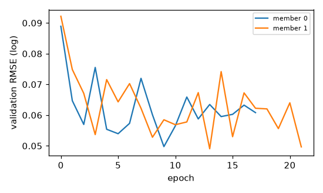
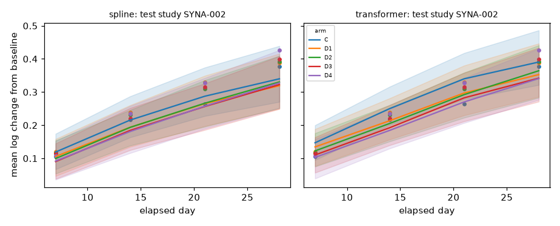
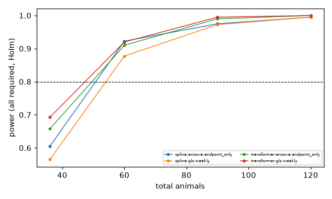

SYNTHETIC PROOF OF CONCEPT - NOT REAL-WORLD VALIDATION
Body weight is the only modelled endpoint. Results cannot establish total animal requirements for a toxicology program, cannot justify reducing welfare observations or protocol checks, and are not regulatory-grade.
configs/smoke.yaml (hash acd2757a73831d6c), seed 20261017| stage | status | seconds | key |
|---|---|---|---|
| design | evaluated | 57.9 | NA |
| evaluate | NA | 22.5 | NA |
| generate | NA | 0.2 | efd5df7e2d8f4af0 |
| ingest | NA | 0.5 | 137a14ffbade8ba6 |
| optional_models | {'chronos2': 'not_run', 'deepar': 'not_run', 'tft': 'not_run'} | NA | NA |
| prepare | NA | NA | feda14205081a545 |
| report | NA | NA | NA |
| train_spline | trained | 1.8 | 0b35b9892b6b941e |
| train_transformer | trained | 3.0 | 14cdab82a34a6dc5 |
Exclusion counts (animals):
| reason | n |
|---|---|
| species_out_of_scope | 50 |
| too_few_post_baseline_obs | 1 |
Limitations recorded during ingestion:
Mapping warnings by type: none
Frozen study-level splits: {'test': 3, 'test_compound_holdout': 1, 'train': 9, 'validation': 3} (hash 47b9e5e7daf20bb0); compound holdout: ['CMP01']

| model | status | task | reason |
|---|---|---|---|
| chronos2 | not_run | secondary (early-history, zero-shot first; fine-tuning separate) | optional dependency 'chronos' not installed |
| deepar | not_run | secondary (early-history forecasting) | optional dependency 'gluonts' not installed |
| tft | not_run | secondary (early-history forecasting) | optional dependency 'pytorch_forecasting' not installed |
| model | split | studies | obs | RMSE log | RMSE g | MAE g | cov80 | cov95 | CRPS | SB RMSE | SB cov95 | energy | grp-mean cov90 | contrast cov90 | contrast bias | var ratio | incr ratio | max cov90 |
|---|---|---|---|---|---|---|---|---|---|---|---|---|---|---|---|---|---|---|
| spline | test_compound_holdout | 1 | 512 | 0.044 | 11.971 | 8.911 | 0.934 | 0.992 | 0.026 | 0.044 | 0.992 | 0.080 | 1.000 | 1.000 | -0.007 | 1.232 | 1.053 | 0.955 |
| spline | test | 3 | 573 | 0.084 | 26.493 | 19.988 | 0.728 | 0.914 | 0.047 | 0.084 | 0.909 | 0.101 | 0.680 | 0.750 | 0.014 | 1.302 | 1.058 | 0.774 |
| transformer | test_compound_holdout | 1 | 512 | 0.066 | 18.847 | 15.192 | 0.781 | 0.955 | 0.037 | 0.066 | 0.955 | 0.113 | 0.884 | 1.000 | -0.018 | 1.473 | 1.083 | 0.879 |
| transformer | test | 3 | 573 | 0.065 | 20.871 | 15.190 | 0.839 | 0.963 | 0.036 | 0.065 | 0.965 | 0.079 | 0.891 | 0.583 | -0.037 | 1.472 | 1.093 | 0.884 |
SB = study-balanced. Coverage targets: cov80=0.80, cov95=0.95, group-mean/contrast/max cov90=0.90; variance and increment ratios target 1. Few test studies -> wide uncertainty.
Residual correlation by gap (observed vs predicted):
| model | split | gap_bin | corr_obs | corr_pred | n_pairs |
|---|---|---|---|---|---|
| spline | test_compound_holdout | (0,4] | 0.920 | 0.926 | 7 |
| spline | test_compound_holdout | (4,8] | 0.885 | 0.875 | 6 |
| spline | test_compound_holdout | (8,15] | 0.800 | 0.806 | 9 |
| spline | test_compound_holdout | (15,100] | 0.681 | 0.693 | 6 |
| spline | test | (4,8] | 0.830 | 0.864 | 9 |
| spline | test | (8,15] | 0.772 | 0.774 | 6 |
| spline | test | (15,100] | 0.668 | 0.662 | 3 |
| transformer | test_compound_holdout | (0,4] | 0.920 | 0.937 | 7 |
| transformer | test_compound_holdout | (4,8] | 0.885 | 0.895 | 6 |
| transformer | test_compound_holdout | (8,15] | 0.800 | 0.838 | 9 |
| transformer | test_compound_holdout | (15,100] | 0.681 | 0.765 | 6 |
| transformer | test | (4,8] | 0.830 | 0.871 | 9 |
| transformer | test | (8,15] | 0.772 | 0.789 | 6 |
| transformer | test | (15,100] | 0.668 | 0.700 | 3 |
| model | split | status | rmse_log | cov90 | crps_log | n_obs | note |
|---|---|---|---|---|---|---|---|
| spline | test_compound_holdout | conditioned | 0.035 | 0.946 | 0.019 | 259 | NA |
| spline | test_compound_holdout | pre_study | 0.052 | 0.985 | 0.030 | 259 | NA |
| spline | test | conditioned | 0.038 | 0.955 | 0.021 | 287 | NA |
| spline | test | pre_study | 0.100 | 0.801 | 0.058 | 287 | NA |
| transformer | test_compound_holdout | conditioned | 0.040 | 0.880 | 0.022 | 259 | NA |
| transformer | test_compound_holdout | pre_study | 0.077 | 0.873 | 0.044 | 259 | NA |
| transformer | test | conditioned | 0.043 | 0.899 | 0.024 | 287 | NA |
| transformer | test | pre_study | 0.078 | 0.906 | 0.044 | 287 | NA |
Success on the secondary task does not establish success on the primary task.

SYNTHETIC PROOF OF CONCEPT
conditional power at prespecified effects is reported separately from predictive assurance under model-predicted effects
Analytical schedule only; protocol-required welfare weighings and clinical observations are performed regardless and are not optimized.
| candidate | n_animals | n_measurements | power | power_ci_lo | fwer_max_point | fwer_max_ci_hi | coverage_min | bias_frac | failure_rate_max | feasible | assurance_all_required_model_effect | secondary_coverage_min | secondary_bias_max_abs | |||
|---|---|---|---|---|---|---|---|---|---|---|---|---|---|---|---|---|
| ancova | endpoint_only | n=6/6/6 | equal | 36 | 72 | 0.605 | 0.555 | 0.050 | 0.076 | 0.945 | 0.035 | 0.000 | False | 0.412 | NA | NA |
| gls | weekly | n=6/6/6 | equal | 36 | 180 | 0.565 | 0.515 | 0.037 | 0.061 | 0.943 | 0.110 | 0.000 | False | 0.388 | 0.948 | 0.008 |
| ancova | endpoint_only | n=10/10/10 | equal | 60 | 120 | 0.922 | 0.892 | 0.055 | 0.082 | 0.945 | 0.013 | 0.000 | True | 0.613 | NA | NA |
| gls | weekly | n=10/10/10 | equal | 60 | 300 | 0.877 | 0.841 | 0.050 | 0.076 | 0.930 | 0.089 | 0.000 | True | 0.618 | 0.930 | 0.007 |
| ancova | endpoint_only | n=15/15/15 | equal | 90 | 180 | 0.975 | 0.955 | 0.060 | 0.088 | 0.938 | 0.017 | 0.000 | True | 0.735 | NA | NA |
| gls | weekly | n=15/15/15 | equal | 90 | 450 | 0.973 | 0.951 | 0.055 | 0.082 | 0.915 | 0.088 | 0.000 | True | 0.743 | 0.912 | 0.006 |
| ancova | endpoint_only | n=20/20/20 | equal | 120 | 240 | 0.995 | 0.982 | 0.060 | 0.088 | 0.940 | 0.016 | 0.000 | True | 0.818 | NA | NA |
| gls | weekly | n=20/20/20 | equal | 120 | 600 | 0.995 | 0.982 | 0.048 | 0.073 | 0.915 | 0.089 | 0.000 | True | 0.825 | 0.905 | 0.006 |
| candidate | n_animals | n_measurements | power | power_ci_lo | fwer_max_point | fwer_max_ci_hi | coverage_min | bias_frac | failure_rate_max | feasible | assurance_all_required_model_effect | secondary_coverage_min | secondary_bias_max_abs | |||
|---|---|---|---|---|---|---|---|---|---|---|---|---|---|---|---|---|
| ancova | endpoint_only | n=6/6/6 | equal | 36 | 72 | 0.657 | 0.609 | 0.050 | 0.076 | 0.932 | 0.023 | 0.000 | False | 1.000 | NA | NA |
| gls | weekly | n=6/6/6 | equal | 36 | 180 | 0.693 | 0.645 | 0.040 | 0.064 | 0.935 | 0.045 | 0.000 | False | 1.000 | 0.948 | 0.004 |
| ancova | endpoint_only | n=10/10/10 | equal | 60 | 120 | 0.910 | 0.878 | 0.052 | 0.079 | 0.943 | 0.008 | 0.000 | True | 1.000 | NA | NA |
| gls | weekly | n=10/10/10 | equal | 60 | 300 | 0.920 | 0.889 | 0.045 | 0.070 | 0.938 | 0.033 | 0.000 | True | 1.000 | 0.958 | 0.003 |
| ancova | endpoint_only | n=15/15/15 | equal | 90 | 180 | 0.990 | 0.975 | 0.072 | 0.102 | 0.925 | 0.020 | 0.000 | False | 1.000 | NA | NA |
| gls | weekly | n=15/15/15 | equal | 90 | 450 | 0.995 | 0.982 | 0.055 | 0.082 | 0.930 | 0.045 | 0.000 | True | 1.000 | 0.930 | 0.002 |
| ancova | endpoint_only | n=20/20/20 | equal | 120 | 240 | 1.000 | 0.991 | 0.055 | 0.082 | 0.945 | 0.014 | 0.000 | True | 1.000 | NA | NA |
| gls | weekly | n=20/20/20 | equal | 120 | 600 | 1.000 | 0.991 | 0.050 | 0.076 | 0.900 | 0.035 | 0.000 | True | 1.000 | 0.945 | 0.002 |

fresh_spline: fresh batch from the proposing response modelfresh_transformer: fresh batch from the proposing response modelgenerator_B: independent generator B (different growth/effect/covariance families)stress_covariance_shift: generator A with sigma_p x1.6 and ell x2stress_heterogeneity: generator A with animal/study slope SD x1.6stress_delayed_effect: generator A with a delayed effect shapestress_transient_effect: generator A with a transient effect shapestress_heavy_tails: generator B with t(3) measurement noise x1.5oracle_generator_A: synthetic oracle (true data-generating parameters)| simulator | candidate | n_animals | power | power_ci_lo | fwer_max_point | fwer_max_ci_hi | coverage_min | bias_frac | failure_rate_max | feasible | |||
|---|---|---|---|---|---|---|---|---|---|---|---|---|---|
| fresh_spline | ancova | endpoint_only | n=10/10/10 | equal | 60 | 0.933 | 0.910 | 0.048 | 0.069 | 0.947 | 0.004 | 0.000 | True |
| fresh_spline | gls | weekly | n=10/10/10 | equal | 60 | 0.898 | 0.871 | 0.045 | 0.065 | 0.950 | 0.071 | 0.000 | True |
| fresh_transformer | ancova | endpoint_only | n=10/10/10 | equal | 60 | 0.907 | 0.881 | 0.040 | 0.059 | 0.948 | 0.018 | 0.000 | True |
| fresh_transformer | gls | weekly | n=10/10/10 | equal | 60 | 0.928 | 0.905 | 0.042 | 0.061 | 0.952 | 0.053 | 0.000 | True |
| generator_B | ancova | endpoint_only | n=10/10/10 | equal | 60 | 0.913 | 0.888 | 0.053 | 0.074 | 0.947 | 0.011 | 0.000 | True |
| generator_B | gls | weekly | n=10/10/10 | equal | 60 | 0.912 | 0.886 | 0.053 | 0.074 | 0.948 | 0.053 | 0.000 | True |
| stress_covariance_shift | ancova | endpoint_only | n=10/10/10 | equal | 60 | 0.910 | 0.884 | 0.053 | 0.074 | 0.943 | 0.043 | 0.000 | True |
| stress_covariance_shift | gls | weekly | n=10/10/10 | equal | 60 | 0.848 | 0.817 | 0.040 | 0.059 | 0.945 | 0.103 | 0.000 | True |
| stress_heterogeneity | ancova | endpoint_only | n=10/10/10 | equal | 60 | 0.785 | 0.750 | 0.040 | 0.059 | 0.945 | 0.014 | 0.000 | False |
| stress_heterogeneity | gls | weekly | n=10/10/10 | equal | 60 | 0.855 | 0.824 | 0.100 | 0.127 | 0.892 | 0.077 | 0.000 | False |
| stress_delayed_effect | ancova | endpoint_only | n=10/10/10 | equal | 60 | 0.990 | 0.978 | 0.050 | 0.071 | 0.947 | 0.029 | 0.000 | True |
| stress_delayed_effect | gls | weekly | n=10/10/10 | equal | 60 | 0.985 | 0.972 | 0.038 | 0.057 | 0.962 | 0.012 | 0.000 | True |
| stress_transient_effect | ancova | endpoint_only | n=10/10/10 | equal | 60 | 0.983 | 0.970 | 0.068 | 0.092 | 0.932 | 0.011 | 0.000 | False |
| stress_transient_effect | gls | weekly | n=10/10/10 | equal | 60 | 0.838 | 0.806 | 0.033 | 0.051 | 0.865 | 0.214 | 0.000 | False |
| stress_heavy_tails | ancova | endpoint_only | n=10/10/10 | equal | 60 | 0.887 | 0.859 | 0.062 | 0.084 | 0.940 | 0.034 | 0.000 | True |
| stress_heavy_tails | gls | weekly | n=10/10/10 | equal | 60 | 0.840 | 0.808 | 0.043 | 0.063 | 0.953 | 0.050 | 0.000 | True |
| oracle_generator_A | ancova | endpoint_only | n=10/10/10 | equal | 60 | 0.985 | 0.972 | 0.048 | 0.069 | 0.950 | 0.003 | 0.000 | True |
| oracle_generator_A | gls | weekly | n=10/10/10 | equal | 60 | 0.965 | 0.947 | 0.040 | 0.059 | 0.947 | 0.062 | 0.000 | True |
ancova|endpoint_only|n=10/10/10|equal (60 animals, 120 analytical weighings)ancova|endpoint_only|n=10/10/10|equal (60 animals, 120 analytical weighings)